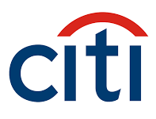

Gerente de Operaciones
Deal S.A.
Marzo 2022 a la actualidad.
Luego de haber liderado el área de Back Office fui designado a cargo de la Gerencia de Operaciones. El principal objetivo fue apuntalar las áreas operativas en el proceso de crecimiento, ordenando y mejorando los procedimiento vigentes.
También llevé adelante la implemtención de BYMA-OMS (Order Management System) para poder brindarle a los clientes la posibilidad de operar a través de internet y de aplicaciones móviles. Al mismo tiempo encaramos la renovación de la página web como puntapié de un camino de digitalización integral.
Pude llevar adelante un ordenamiento transverslar en la forma de trabajo de la compañía, ordenando la comunicación y promoviendo el uso de herramientas informáticas.
Jefe de Back Office
Deal S.A.
Diciembre 2020 a Marzo 2022.
A cargo del equipo de Back Office que realiza tareas como Alyc y ACDI operando en los principales mercados (Byma, Rofex, MAV, Euroclear) y respondiendo a las regulaciones e informes de los organismos contralores.
La compañía entró en un proceso de crecimiento y se encaró una reestructuración integral del Back Office, incluyendo la selección de personal idóneo para la tarea y en línea con el nuevo perfil de la compañía, armado de los procedimientos para todos los productos, incorporación de nuevas operatorias y programa de incentivo para el personal.
Supervisor de Corporate Actions, Securities Services
HSBC Bank Argentina
Junio 2019 a Octubre 2020.
Pude llevar adelante mejoras integrales en los procesos, logrando mayor eficiencia reduciendo los tiempos de las tareas. También pude implementar aplicativos de sistema relacionados con carga de transferencias de títulos y otros con impacto en la mensajería con clientes internacionales.
Las mejores se realizaron teniendo como principal objetivo brindarle a los clientes un mejor servicio, más y mejor información y tendiendo a reducir las consultas sobre la operatoria diaria, haciendo que esto repercutiera en tener más tiempo disponible para tareas más complejas.
Analista Sr. de Corporate Actions, Área Internacional
Caja de Valores S.A.
Junio 2015 a Junio 2019.
Análisis, comunicación y liquidación de eventos corporativos (asambleas, canjes, pagos de dividendos, rentas, amortizaciones) para centrales depositarias internacionales y clientes locales. Manejo de mensajería Swift; soporte diario a clientes; desarrollo de las aplicaciones de sistemas para las tareas diarias.
Como miembros de ISSA (International Securities Services Association) participé del Corporate Actions Working Group, analizando los estándares de trabajo y las posibilidades de mejoras.
También realicé la liquidación de eventos de distintas Centrales Depositarias (DTCC, Euroclear, Clearstream, B3, Iberclear) para el mercado local; y la asignación de códigos a nuevas especie locales (ISIN, CFI, FISN).
Analista Ssr. de Administración de Inversiones de Terceros
Banco Hipotecario S.A.
Febrero 2014 a Mayo 2015.
Responsable de la liquidación de operaciones de compra/venta, transferencias y pagos de renta y amortización de títulos. Realizar las suscripciones y rescates de fondos comunes de inversión cumpliendo el rol de agente colocador. Adaptación de los procesos a la nueva normativa para operar como agente ALyC y agente del MerVal.
Analista de Back Office
Toronto Trust Fondos Comunes de inversión
Noviembre 2013 a Febrero 2014.
Entre las funciones realizadas figuran realizar las operaciones concertadas, verificar e instruir a las sociedades depositarias, armado de cash flows, conciliación de cuentas, análisis de precios y realizar la valuación diaria de las cuotapartes.

Supervisor de Corporate Actions
Citibank N.A.
Septiembre 2008 a Mayo 2013.
Mejor subcustodio de Argentina según la revista Global Finance: 2007, 2008, 2009, 2010, 2011 ,2012, 2013.
Corporate Actions & Trust (Eventos corporativos y Agente fiduciario):
- Supervisor desde octubre 2012 a mayo 2013.
- Subgerente desde mayo 2009.
- Analista Jr. desde septiembre 2008 a octubre 2012.
Procesamiento de pagos, canjes de títulos y representaciones en Asambleas, para el mercado local y del exterior. Agente de garantía para fideicomisos, escrow, agente administrativo de Préstamos Sindicados y de cálculo para emisiones de títulos.
Llevé adelante satisfactoriamente la adaptación de los fideicomisos y escrows a nuevas normativas cambiarias e impositivas articulando entre los actores internos de la empresa y las entidades regulatorias.
Fui reconocido por la compañía por el importante aporte a los objetivos de Citi durante el canje de deuda Argentina en 2010.
Recibí capacitación en workshops in company dentro del programa de management del banco.
Analista Jr. de Liquidaciones
Citibank N.A.
Mayo 2007 a Septiembre 2008.
Liquidación de operaciones de títulos para clientes del exterior y locales tanto para la banca corporativa como para banca de consumo.
Operatoria para mercados locales, DTCC, Euroclear, Clearstream, Brasil y México.